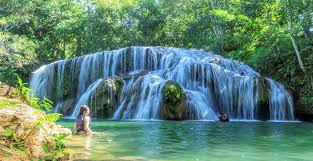
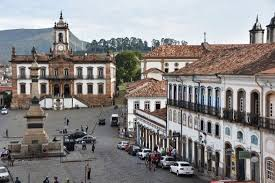
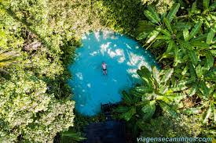

Meus sites favoritos: Leandro de Paula Barbosa
Bonito - Mato Grosso do Sul

Visitar o site de Bonito
Ouro Preto - Minas Gerais

Visitar o site de Ouro Preto
Jalapão - Tocantins

Visitar o site do Jalapão
Chapada dos Veadeiros - Goiás
Visitar o site da Chapada
Capitólio - Minas Gerais
Visitar o site de Capitólio
 Visitar o site da Chapada
Visitar o site da Chapada